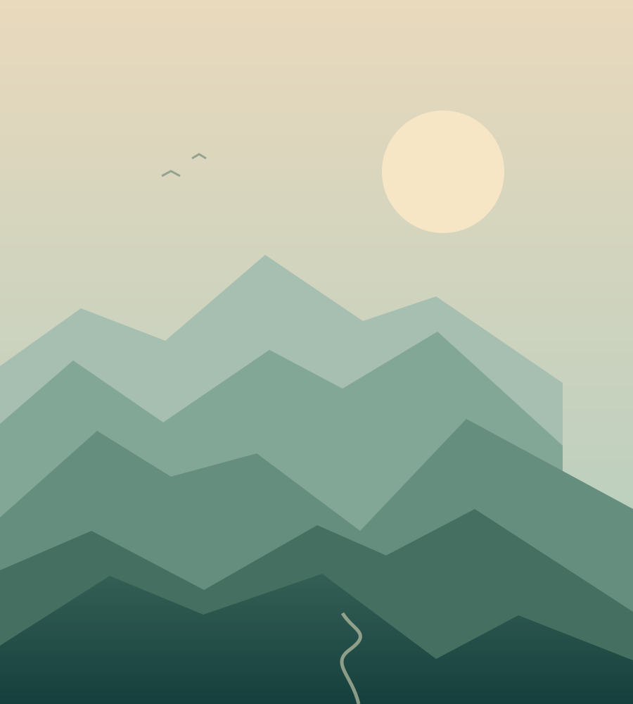

留一点时间，
看看远处。
把画面缩小，把注意力还给文字。
有时候，我们只是想安静地读一点东西。图片不必占满屏幕，文字也不必小得费力。
在右侧面板点“选择网页上的内容”，将鼠标移到左边图片上。看到红框后点击，即可用滑杆调整整块图片区的大小。
试试选中这一段文字，也可以直接调整字号。
鼠标移到下方图片上，点击红框，再拖动面板中的大小滑杆。

把画面缩小，把注意力还给文字。
有时候，我们只是想安静地读一点东西。图片不必占满屏幕，文字也不必小得费力。
在右侧面板点“选择网页上的内容”，将鼠标移到左边图片上。看到红框后点击，即可用滑杆调整整块图片区的大小。
下方是带交互覆盖层的视频区域。先点击面板中的重新选择，再选视频。
选中一张，默认一起调整；其他匹配图片会显示红色虚线框。
选图片后缩到 50%，再扩大范围调整外层，最后回第 1 层恢复 100%。
外层区域有自己的宽高，层级切换不会丢掉图片的调整。